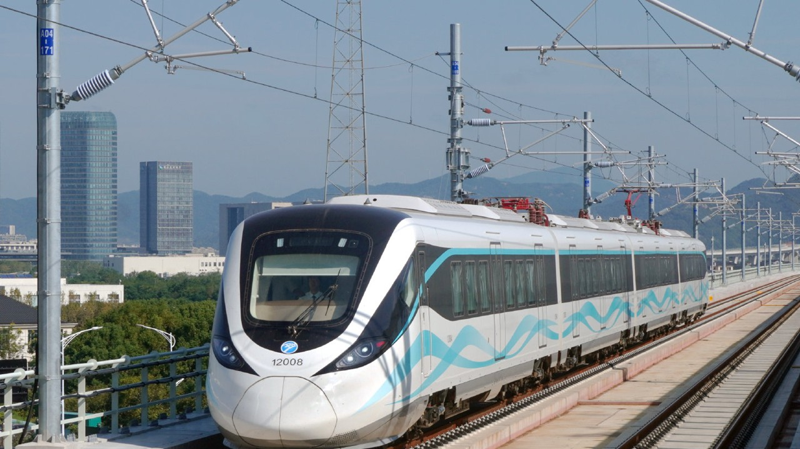

目录
2026年9月22日，我国首条跨海市域铁路——宁波轨道交通12号线正式开通运营。这条北起鄞州区小洋江站、南至象山县大目湾站的钢铁动脉，全长61.45公里，以最高160公里的时速横跨象山港，将宁波主城区与象山半岛之间的时空距离压缩至最快30分钟左右。它不仅仅是一条交通线，更是一条承载着“轨道上的宁波”战略愿景、串联起都市繁华与东海浪漫的发展轴、风景线与民生纽带。

一、战略定位：宁波“一体两翼”的南翼脊梁
在宁波的城市发展蓝图中，12号线被赋予了清晰的战略使命。作为宁波“一体两翼”格局中南翼的骨干线路，它的开通标志着宁波轨道交通线网总运营里程达到360公里，串联起六区一县，加速构建全域一体化的发展格局。
从区域联动的角度看，12号线有效缓解了甬莞高速等既有通道的拥堵压力，强化了主城区与南部滨海片区的联动。更重要的是，它以交通先导的方式，带动产业和人口向新兴增长极布局，推动沿线城镇功能迭代与公共服务均等化，为宁波建设长三角南翼经济中心提供坚实支撑。线路总投资达267.56亿元，足见其在城市基础设施布局中的分量。
二、线路走向与车站布局：十站串联山海
12号线象山线共设10座车站，其中地下站2座、高架站8座。线路自小洋江站出发，一路向南，依次经过云龙火车站、横溪站、塘溪站、鄞州咸祥站，随后横跨象山港，进入象山境内，途经贤庠站、大徐站、丹城站、滨海大道站，最终抵达大目湾站。
小洋江站作为线路起点，是全线唯一的换乘枢纽，可与既有的4号线、7号线实现换乘。这一设计使得12号线能够快速接入宁波轨道交通既有网络，让来自城市各方向的乘客便捷地踏上前往象山的旅程。横溪站预留了未来宁波西方向接入西站支线的条件，咸祥站则预留了梅山支线的接轨条件，为线路的未来拓展留出了空间。值得注意的是，12号线的规划版图并不止于象山线。根据《宁波市轨道交通线网规划（2021-2035年）》，12号线还包含西站支线（镇海骆驼至鄞州横溪）和梅山支线（鄞州咸祥至北仑梅山），其中宁波枢纽支线已列入规划研究范围。
三、工程奇迹：象山港跨海大桥与“海上列车”景观
12号线最引人注目的工程节点，无疑是象山港跨海大桥。这座大桥全长8.276公里，主跨688米，是目前世界最大跨径的无砟轨道铁路斜拉桥，并创下了“国内紧邻既有桥最大跨径桥梁”等多项行业纪录。
在设计上，大桥采用了与既有甬莞高速公路桥“双桥并行、桥墩对齐”的方案，两座大桥并肩横卧于碧波之上，形成了独特的“双桥卧波”景观。当蓝青色的市域列车以160公里的时速掠过桥面，乘客透过车窗即可将“北纬30°最美海岸线”的万象山海尽收眼底。这一视觉体验，让12号线在正式开通前就被市民和网友亲切地称为“能看海的地铁”。象山港畔，碧海澄波之上双桥飞架，与海上风电构成了一幅现代化的桥海相依画卷，这里也注定将成为象山新的旅游观光打卡点。
四、列车装备：宁波造的“轩臻”市域A型车
承担12号线运营任务的，是来自宁波中车轨道交通装备有限公司的“轩臻”品牌中国标准城轨列车。作为全国首个标准市域A型车落地示范项目，这款列车采用4节编组，车长95.3米，最大载客量1010人，最高运行时速160公里，远超宁波既有线路80至100公里的运行速度。
外观上，列车以蓝青色为主色调，车头采用梭形设计，车身以“骏马奔跃”为意象，两侧融入“山海意境”飘带，轻盈飘逸，与线路的山海主题形成呼应。走进车厢，横向排列的软包织物座椅垂直于车窗，部分座位配有小桌板，更接近火车的乘坐感受，为长距离通勤提供了舒适度。车门区域取消了立柱扶手，进门位置设有环形杆和多个扶手，兼顾站立与就座乘客的需求。列车还应用了先进的气密性与噪声控制技术，车内噪音优于行业标准，并搭载人工智能与大数据技术，可实时分析车厢拥挤度，实现智能调光、调温。
在绿色低碳方面，列车采用永磁同步牵引技术，整车能耗较传统市域列车降低约15%，牵引能耗降低14%，整车减重约4.28吨。其关键部件自主化率超98%，中国标准覆盖率达85%以上，体现了“宁波造、宁波用”的产业闭环能力。
五、车站设计：“一站一景”的文化长廊
12号线以“山海穿梭、织锦未来”为设计主题，将自然地貌、历史文脉与产业特色融入每一座车站，真正做到“一站一景”。
以进入象山的第一站贤庠站为例，车站以“涌动风帆”为主题，笔直的立柱好比挺拔的桅杆，波浪形的屋顶如迎风鼓起的船帆，既呼应了贤庠镇“工业强镇、农旅美镇”的发展定位，也唤起了这片土地曾经作为繁忙轮渡码头的记忆。小洋江站的“星河五洲”传递了慕义为善的宁波帮精神，云龙火车站的“竞渡云龙”展现了龙舟文化的积极向上，横溪站的“波光碧海”融入了东钱湖的山水意象，塘溪站的“山林望远”凸显传统中式美感。此外，鄞州咸祥站的“山海盐田”、大徐站的“古道凉亭”、丹城站的“山海之城”，以及滨海大道站与大目湾站展现的浪漫滨海风情，共同构成了一条流动的文化长廊。大徐站的设计尤其值得留意，其取意山野古道凉亭的中式廊檐，与这片土地作为殷夫故里、元曲名家汤式家乡的厚重文脉形成了对话。
六、出行体验与沿线生活：从通勤到文旅的全面激活
对于日常通勤者而言，12号线带来的改变是直观的。线路开通后，宁波主城至象山最快约30分钟即可抵达，单程通行时长约55至60分钟，较常规通勤方式缩短35至45分钟。这一时间压缩，让“住在象山、工作在宁波主城”或反向的双城生活成为可能。
而对于文旅消费而言，12号线更像是一条“引流线”。丹城站作为象山城区的核心枢纽，出站便是开阔的人民广场，去往松兰山、象山影视城等景区十分便捷，站点周边的涌金广场商圈、国际风情街等资源有望借助轨交客流实现价值提升。滨海大道站则直接服务于松兰山滨海旅游度假区，那里有13.14公里沿海游步道串联起的沙滩、栈道、礁石与灯塔，以及亚帆灯塔、西翅膀玻璃栈道等打卡点。贤庠站周边的海鲜餐饮潜力也被寄予厚望——待轨交客流涌入，在此尝一口渔家小海鲜、看一眼跨海双桥，将成为独属于这条线路的旅途体验。
在试乘期间，象山海鲜市场已经提前感受到了轨交带来的热度。首班列车抵达丹城后，大批来自主城区的乘客前往菜场购买梭子蟹、梅鱼、带鱼，当地海鲜市场的来客量比平时增加了50%至60%。这或许只是一个开始。
七、结语
宁波轨道交通12号线的开通，完成了一件此前没有人做过的事：让市域铁路跨越海湾，让日常通勤与山海风景在同一段旅程中并存。从象山港跨海大桥的工程突破，到“轩臻”列车的宁波智造，再到“一站一景”的文化表达，这条线路凝聚了规划者、建设者与运营者的共同心血。
对于宁波这座城市而言，12号线是“轨道上的宁波”从蓝图走向现实的关键一步；对于沿线居民而言，它是每天多睡半小时的从容，是周末随时出发去看海的自由；对于象山半岛而言，它是一扇终于被推开的门。当蓝青色的列车穿行于跨海大桥之上，窗外是碧海与双桥，前方是象山的青山与街巷——这趟旅程本身，就是宁波这座城市向海而生、因轨而兴的生动注脚。